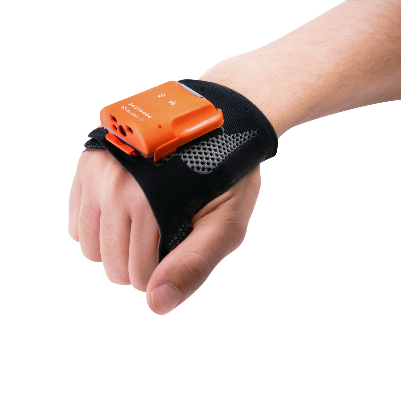

Wearable Scanning Technology Built for Speed, Safety, and Efficiency
ProGlove develops lightweight, back-of-hand wearable barcode scanners that let workers scan items without stopping their tasks. This hands-free design reduces motion, cuts down on fatigue, and speeds up workflow in warehouses, retail stockrooms, and manufacturing environments.
These scanners offer multiple scanning ranges, fast data capture, and wireless connectivity that integrates with existing workplace systems. Their compact design supports full-shift battery life and improves overall ergonomic safety. (Sources: UnternehmerTUM ProGlove profile; Industrial Wearable Display Scanner overview.)
See Community Implementation → About ProGlove
Founded in Munich, ProGlove began as a startup focused on bridging the gap between human workers and digital systems. Their award-winning wearable scanner technology is now used across industries to reduce errors, streamline picking processes, and improve workplace safety. By replacing bulky handheld scanners, ProGlove enables faster, more natural movements while maintaining high scanning accuracy.